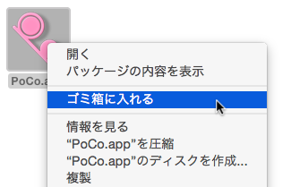
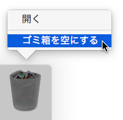

Uninstall the PoCo.app
Because of an uninstaller is not available, you must remove by hand operated when you need to uninstall the PoCo.app.
The PoCo.app move(drag and drop) to the Trashes.


The Auxiliary information(such as window position, preferences and so on) is stored into the UserDefaults.
So that, if you want to remove such informations, you should use the Terminal.app, which should be typing following command. Then the UserDefaults of the PoCo.app is removed.
defaults delete org.poco256.PoCo